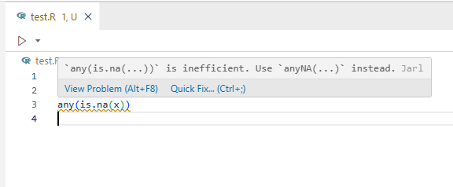
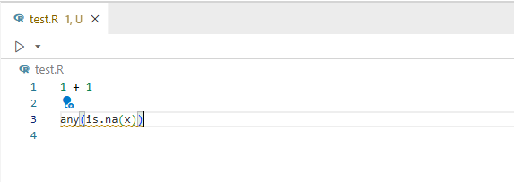
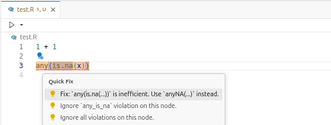
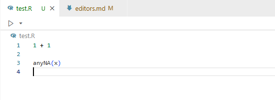
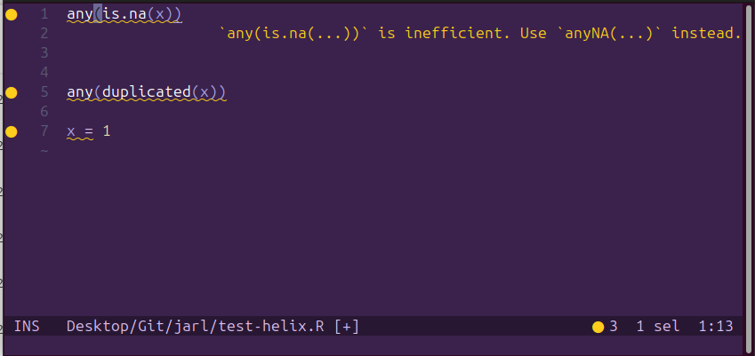
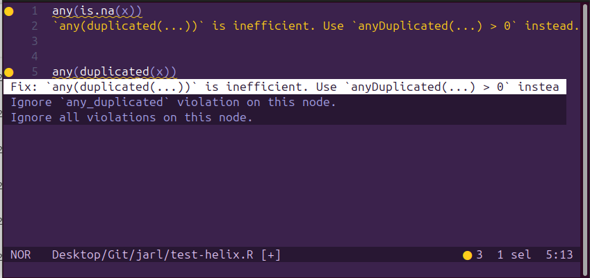
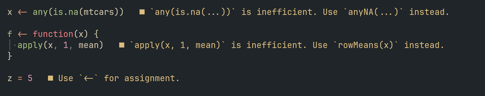
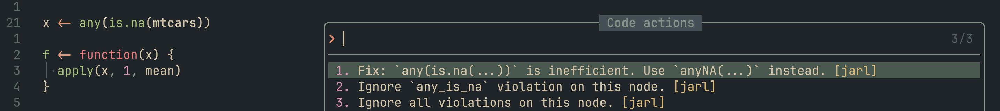

Editor support
Version numbers of the Jarl extensions may differ from the version number of Jarl itself. This is made on purpose so that it is easier to make releases that are specific to each extension or to Jarl itself.
To get the version number of Jarl itself, use jarl --version.
VS Code / Positron
Both VS Code and Positron have access to the Jarl extension via the VS Marketplace and Open VSX.
The extension comes with a bundled version of Jarl. This means you don’t need to install Jarl via the command line.
This can be changed in the editor’s settings, for instance to manually install a pre-released version of Jarl and have the extension use it. To do so, look for “Jarl: Executable Strategy” in the settings and set it to “path”. Then, add the path to the Jarl binary in “Jarl: Executable Path”.
This extension provides code higlights and quick fixes:
- code highlights will underline pieces of code that violate any rule in your setup:

- quick fixes lightbulb icons will appear when the cursor is next to a highlighted piece of code. Clicking this icon will give you several options: apply the fix only for this piece of code, add a comment to ignore this specific violation, or add a comment to ignore all violations present in this piece of code. The screenshots below show the procedure to apply the fix:



Use jarl.toml to configure Jarl (rules to select or ignore, files to skip, assignment operator to use, etc.).
The Tombi extension is useful to have suggestions and autocompletion when editing jarl.toml.
Zed
Jarl is available in the list of Zed extensions. After installing it, you will need to update settings.json, in particular the field languages:
"languages": {
"Python": {
[...]
},
"R": {
"language_servers": ["jarl"]
}
}language_servers accepts multiple values, so you may have "language_servers": ["jarl", "air"] for example.
RStudio
Currently, Jarl cannot be integrated in RStudio to highlight code or provide quick fix actions in the editor. The only way to use Jarl in RStudio is via the Terminal.
Helix
To use Jarl as language server in the Helix editor, you need first to add it to the language configuration file, for instance ~/.config/helix/languages.toml:
[language-server.jarl]
command = "jarl"
args = ["server"]
[[language]]
name = "r"
language-servers = ["jarl"]Jarl should then be active in the editor, providing code highlighting and showing the message when the cursor is on the highlighted code:

Helix also provides a code-action keybinding. When the cursor is on some code reported by Jarl and when the editor is in “Normal” mode, press “Space” then “a” to show the different code actions:

Neovim
To use Jarl as an LSP in Neovim, you need to configure it with the built-in Neovim LSP (vim.lsp.config) or through nvim-lspconfig. It is not yet available through Mason or part of the nvim-lspconfig collection. Below is an example using the built-in system with Neovim 0.11+.
Create an LSP config file at ~/.config/nvim/lsp/jarl.lua:
---@type vim.lsp.Config
return {
cmd = { 'jarl', 'server' },
filetypes = { 'r', 'rmd'},
-- root_markers = { '.git' },
root_dir = function(bufnr, on_dir)
on_dir(vim.fs.root(bufnr, '.git') or vim.uv.os_homedir())
end,
}Then enable the server in your Neovim configuration (e.g. init.lua or lspconfig.lua):
-- simply
vim.lsp.enable 'jarl'
-- or to pass custom config command
vim.lsp.config('jarl', {})
vim.lsp.enable 'jarl'This enables the code-actions and diagnostics.

